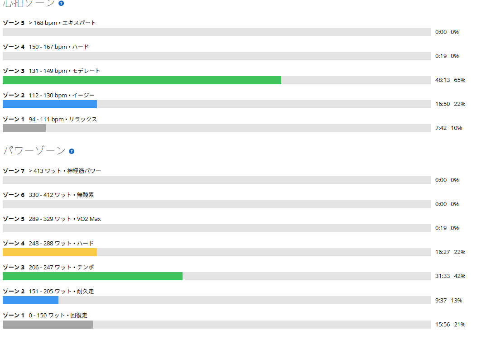

強度は落としたのにきつい。10年目のパワーメーターも途切れ始めた
今日は雨が降ってきたので外ライドをやめてローラーへ。本当は太平まで走って戻ってくるくらいの実走を考えていたが、天気には勝てない。予定を変更して、テンポ〜SST下限くらいの持続走を25分×2でやることにした。
昨日はSST25分×2。その前日は唐沢で60秒ON／30秒OFFを2セット。今日はそれらより明らかに強度を落としている。だから「今日はそこまできつくないだろう」と思っていた。ところが実際は、思ったよりきつかった。おまけに途中からパワーメーターの様子までおかしくなった。

39.16km・NP221W・TSS78.3
- 全体39.16km / 1時間13分55秒 / 運動負荷79
- 負荷平均206W / NP221W / IF0.802 / TSS78.3 / 最大319W / 20分最大242W
- 心拍・回転平均133bpm / 最大155bpm / 平均85rpm
- 環境平均28.6℃ / 最高30.0℃ / 推定発汗421ml
- 効果有酸素TE2.9 / 無酸素TE0.0
メニューはウォームアップ10分、25分、レスト5分、25分、クールダウンで合計1時間14分。昨日のSSTがTSS87.5だったので、数字だけ見れば今日の方が明らかに軽い。それでも体感は意外ときつかった。
240Wと237W。出力は下がって心拍は上がった
- 1本目25分03秒 / 240W / 心拍137〜155bpm / 87rpm
- 2本目25分01秒 / 237W / 心拍144〜150bpm / 84rpm
1本目は狙っていたテンポ〜SST下限としてちょうどいい。昨日のSSTが259Wと254Wだったので、それと比べればかなり低い。それでも脚に余裕がある感じではなかったし、心拍も徐々に上がっていった。
そして分かりやすかったのが2本目だ。パワーは3W低いのに、平均心拍は7bpm高い。出力は下がっているのに、身体側の負担は上がっている。今日「強度のわりにきつい」と感じたのは、こういうところにも出ていた。ちなみに最大心拍は1本目155bpm、2本目150bpm。ピークは出ていないのに平均が上がっているので、突発的に踏んだのではなく、ずっと高いところで推移していたということになる。
ゾーンで見ても高強度ではない。それでもきつい
今日の一番の収穫は、パワーより体感だった。平均206W、NP221W、IF0.802。いつもの高強度日と比べれば数字はかなり低い。それなのにきつい。ゾーンで見ても同じだった。
- パワーゾーンZ4 16分27秒 / Z3 31分33秒 / Z2 9分37秒 / Z1 15分56秒
- 心拍ゾーンZ3 48分13秒 / Z2 16分50秒 / Z1 7分42秒 / Z4は19秒のみ

大部分はテンポ〜SST下限で、心拍的にも高強度とは言えない。それでもきつかった。理由は単純で、今週はずっと脚に負荷を入れ続けているからだと思う。60秒ON／30秒OFF、SST25分×2、そして今日のテンポ持続。一日ごとの数字だけを見れば「今日は軽い」と思える。でも身体はその日だけで動いているわけではなく、累積した疲労も持ったまま走る。今日の体感は、それを分かりやすく教えてくれた感じがする。
こういう日は「もっと踏めば強くなる」ではなく「今は疲労がある」と考える方が自然だ。最近は調子が良く、連日でもメニューをこなせる日が増えていた。だからこそ、うまくいかなかった側の体感も記録しておきたい。
中途半端に壊れるパワーメーターが一番困る
そして今日、もうひとつ気になったことがあった。2本目あたりから、パワーメーターの接続が断続的に切れるような症状が出たのだ。今使っているのはRNC7に付けているパイオニア製で、もう10年くらい使っている。冒頭のグラフで後半にデータが抜けている箇所が、まさにそれである。
完全に壊れてくれれば「はい交換」と判断しやすい。困るのは「たまに切れる」「一応使える」「でもメニュー中は信用できない」というこの状態だ。2本目に入ってからパワー表示が怪しくなって、正直かなりテンションが下がった。それでもメニューは最後まで完遂した。
パワーメーターは、ただ数字を眺めるための機械ではない。今の練習では「250Wに合わせる」「370〜385Wで揃える」「25分間一定にする」という使い方をしている。特にローラーでは、パワーを見ながら一定出力へ合わせること自体が練習の中身になっている。だから途中で数値が飛ぶとかなり困る。
とはいえ、今回の症状だけで10年使ったパワーメーターが寿命だとはまだ決めない。まずは順番に切り分ける。
- 1電池を新品へ交換する
- 2電池端子とフタ周辺の状態を確認する
- 3Edge 530から一度削除して再ペアリングする
- 4校正し直す
- 520〜30分のテスト走で再発するか見る
それでも2〜3回続けて同じドロップが出るなら、交換を考える。完全に壊れた時ではなく「トレーニング機材として信用できなくなった時」が、実質的な交換時期なのかもしれない。
明日はメニューを入れない
明日は高強度メニューを入れない。天気が良ければ、以前走った遊水地のような平坦ルートを気持ちよく流す。雨ならローラーで軽く回す。踏み込まない。数字を追わない。Z1〜低Z2くらいで、脚を動かすだけにする。
今週はすでに60/30、SST25分×2、テンポ〜SST下限25分×2と続いている。ここでさらに積むより、一度抜く。土曜は実家から帰る日なのでアクティブレスト。日曜は予定がずれてMTBになった。明日と土曜で疲労を落とせれば、日曜を楽しみやすくなる。
今日やってみて思ったこと
今日は強度を落とした。それでもきつかった。1本目240W、2本目237W。パワーだけなら余裕がありそうに見えるのに、体感はそうではなかった。これもトレーニングの一部だと思う。毎日「前より高い数字」を出す必要はない。同じ身体でも、前日までの負荷によって同じ240Wの感じ方は変わる。
そして今日はパワーメーターまで不安定になった。10年使っている機材なので、そろそろ何か出ても不思議ではない。まずは電池交換と再ペアリング、校正。それで様子を見る。人間も機材も、今日は少し休ませろという日だったのかもしれない。
次に見るポイント
- 疲労の抜け明日の軽いライドで脚の重さが抜けるか。土曜のアクティブレスト後に改善するか
- 日曜のMTB2日抜いて脚が戻っているか
- パワーメーター新品電池と再ペアリング、校正のあとも接続切れが出るか
- 症状の切り分けパワー表示だけが消えるのか、センサー接続自体が切れるのか